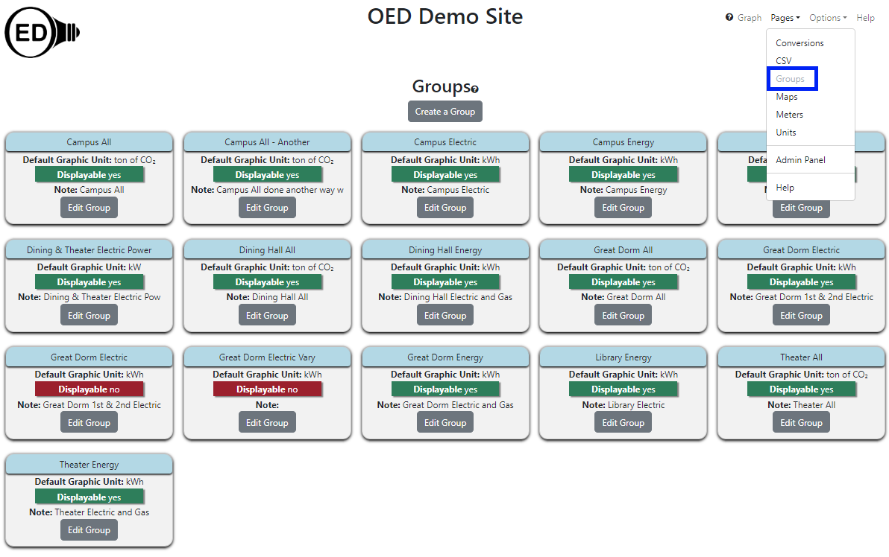

OED Documentation
Group
Version V1.0.0
Documentation overview
Admin documentation
Information
Site Management
Data Acquisition
Site Installation
User documentation
Documentation versions for this page
These features are only available to select people who oversee the OED site (called admins) so this information is not usually of interest to a general user.
Overview
The admin group viewing page allows admin users to see all information on groups on an OED site. It is accessed from the "Pages" dropdown menu by clicking "Groups" as shown in the following figure (highlighted in the blue rectangle where "Groups" is grayed out since it has already been clicked). This page also allows admins to create and edit groups. Admins will see more information than the typical user as shown in the next figure and described below. 
All information shown on this page is based upon the documentation example.
Usage
As shown in the figure above, each group has its own card to show information about that group. The cards are arranged alphabetically from left to right and top to bottom by the group's name. Each card contains the following information:
- Group name in the blue area.
- Default Graphic Unit. This tells the graphing unit used if one is not already selected before this group is chosen.
- Displayable. This controls whether regular users can see a group and graph it. It is "yes" in green if everyone can see/graph this group and "no" in red if only admins can see/graph this group.
- Note. This may give additional information about the group supplied from the admin. Only the first 30 characters will be shown and any additional characters in the note can be seen by clicking the "Edit Group" button.
- Edit Group button. Clicking this button allows one to see any additional information on this group and to edit the values associated with this group.
In addition, there is a "Create a Group" button near the top of the page that allows one to create a new group.
Details
None